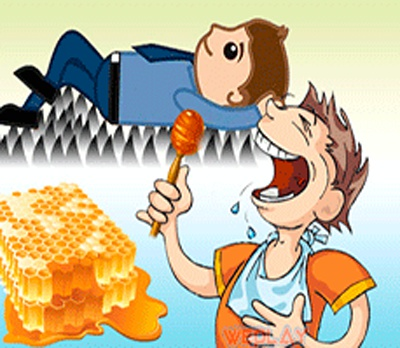

Đánh thức ý thức bản thân

Khi học về tính cách con người Việt Nam phát hiện ra có 5 đặc điểm chính thì trong đó có 1 đặc điểm cực kỳ nguy hiểm đó là dễ thỏa mãn cực kỳ. Khi mang trong mình nỗi đau, đói khổ thì tự giác vươn lên nhưng lúc đỡ đỡ đói đỡ khổ thì hết ý chí. Vượt khổ thì rất tốt nhưng vượt khổ xong rồi là thôi không vượt gì nữa!
Không phải ngẫu nhiên ngày xưa ông cha ta đánh giặc ngoại xâm thậm chí là chống bạo quốc thì chiến thắng vẻ vang, còn thời bình thì kinh tế không thắng nổi ai. Không phải ngẫu nhiên mà những tấm gương nghèo học giỏi lóe sáng lên rồi vụt tắt mà sau đó chẳng bao giờ nghe nói về một tấm gương nghèo vừa vượt khó học giỏi và vừa là tấm gương làm giàu trở thành tỷ phú, hay ít ra là các chuyên gia hàng đầu thế giới. Vậy tại sao?
Là do vượt khổ xong rồi thỏa mãn thì chỉ dừng lại ở đó đó.
Nếu không đừng lại ở vượt khổ thì làm gì nữa?
Hết khổ thì sướng, nên đương nhiên hết vượt khổ thì vượt sướng thôi. Vượt sướng là vượt qua sự thỏa mãn sung sướng hiện tại để tiến xa hơn nữa.
Phải công nhận rằng vượt sướng lại khó hơn vượt khổ. Vượt khổ dễ bởi vì kẻ thù rõ mồn một, vấn đề hiện ra ngay trước mắt còn vượt sướng thì kẻ thù không có, vấn đề thì quá mơ hồ. Không phải vượt khổ xong thì sẽ đứng ở trên đỉnh cao luôn mà vượt khổ chỉ là vừa mới bước qua một bậc thang, bậc thang tiếp theo là vượt sướng còn cao hơn!
Thế giới đã có nhiều người tìm cách vượt sướng. Điển hình như ngày xưa Việt Vương Câu Tiễn nằm gai nếm mật, Gary Vee mỗi ngày đề tượng tượng rằng mình vừa mới mất đi hết cả 4 người thân trong gia đình, Steve Job tưởng tượng ngày mai mình chết. Có thể họ làm như thế không phải hoàn toàn là vượt sướng như mình nghĩ, có thể là hơn thế. Nhưng chung quy lại thì ở con người có một một thứ gọi là ý thức bản thân, bản chất của việc thỏa mãn như nói ở trên chính là việc ý thức ngủ quên.
Độ nguy hiểm của việc khơi dậy ý thức ra sao?
Bạn đã bao giờ nghe trên mạng nhiều người chửi kiểu: “NÓI DÂN TRÍ THẤP LẠI TỰ ÁI, Ý THỨC NHƯ CỦ CẢI MÀ Bla bla bla…” chưa? Chỉ 1 xíu đụng đến tự ái làm khơi dậy ý thức thì người ta có thể xù lên mà chửi nhau đó.
Trong xã hội sung sướng bây giờ, chỉ có người có ý thức mới thấy nỗi khổ mà vươn lên, còn những người đang thỏa mãn với cuộc sống sẽ thấy cuộc đời luôn tươi đẹp. Những người có ý thức mới thấy được vấn đề cần giải quyết, họ giải quyết vấn đề và nâng chất lượng cuộc sống lên, đó cũng chính là những điều mà các founder của các startup đang làm hoặc đối với các nhà kinh doanh thì hay nói là ở đâu cũng thấy tiền. Những người tự giác ý thức trong xã hội này mới là những người thực sự nguy hiểm!
Kết
Bản thân mình cũng hay vui vẻ mỗi ngày mà ít khi nghiêm túc sau lần vượt khổ đậu đại học, và mình thấy có một mối quan hệ tuyến tính nào đó giữa sự nghiêm túc và tự ý thức vì theo quan sát vào miệng giếng của mình nhìn thấy, đa số những người nghiêm túc thường làm được gì đó tiến xa hơn những người luôn vui vẻ suốt ngày. Do đó mình cũng cần vượt sướng nên bây giờ ý tưởng vượt sướng của mình đó là tưởng tưởng những người bạn chơi với mình bao lâu nay chúng nó RẤT KHINH THƯỜNG mình mà bây GIỜ MỚI NHÂN RA ^_^